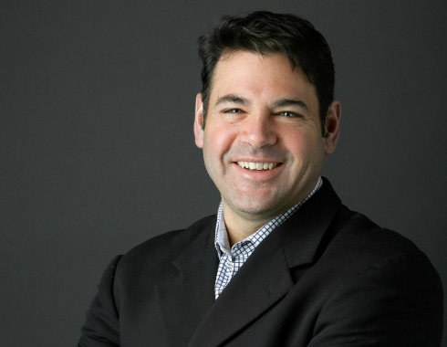

MEET THE TEAM
When it comes to getting fresh seafood in the Rockies, nobody knows the
industry like Seattle Fish Co. In 1918, Mose Iacino built a thriving
business centered on ingenuity, customer service and quality seafood.
Although Seattle Fish Co. has grown exponentially, we remain a family
company at heart.

Derek Figueroa
CEO & President
Derek is responsible for the strategic and operational leadership of
the company. He is known as a driven, innovative, strategic, results
and relationship-focused leader with 30+ years of experience in sales,
marketing, finance, and operations. Derek has been recognized as a
thought leader for building Seattle Fish Company into one of the
premier seafood distributors in the US and for his leadership in
sustainable practices and initiatives, including as a co-founder of
the nonprofit Sea Pact.
He is a tireless advocate for the seafood and hospitality industry,
both locally and nationally, and serves as 2021 Chair of the National
Fisheries Institute. Other board service includes the Colorado
Restaurant Association, Project Angel Heart, Colorado Restaurant
Foundation, American Culinary Foundation, and the Seafood Industry
Research Fund.

Hamish Walker
Chief Operations Officer
Hamish joins Seattle Fish from the brewing industry where he spent
the last 25 years in a variety of procurement and sales leadership
roles. Over that time he participated in the in the enormous change
and global consolidation of the brewing industry. Most recently, he
built and led a successful global procurement function for Molson
Coors, integrating all spend for their expanding business across the
Americas, Europe and Asia.
He brings deep procurement knowledge, wide business acumen, and
multiple experiences of bringing together teams and functions in a
rapidly changing and expanding the business, building process and
structure, and developing high performing teams.